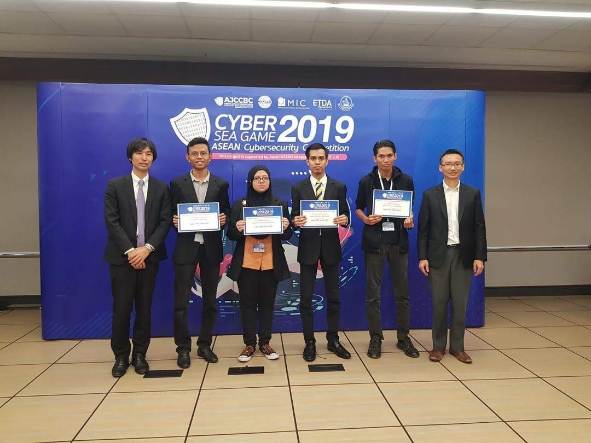

ICTFF 2019
1st Runner Up · UiTM Jasin
Senior Specialist
I specialise in vulnerability management, penetration testing and cloud security. I also build tools and teach, helping people understand security and put it into practice.
Practitioner
Educator
Builder
Communicator
Selected work / 2025 to 2026
Five projects where security practice meets useful execution.
Security Engineering
A practical workflow for cleaning, validating and preparing infrastructure asset data before vulnerability assessment. Built to solve a real operational problem.
Cloud Security Education
Five hands-on labs covering IAM, isolation, encryption, network controls, monitoring and incident detection, designed for students to learn by doing.
Research
Master's research using supervised machine learning to predict cyberattack susceptibility in financial institutions and turn vulnerability data into prioritised action.
Developer Tool
A focused security utility built to make cryptographic checks easier to understand and use. Part of a growing portfolio of practical, public tools.
Learning Platform
A beginner-conscious learning experience that helps non-technical learners use the terminal, build a GitHub portfolio and make visible progress without overwhelm.
Operating range
I work across the full vulnerability lifecycle.
My experience spans banking, consulting and managed security services. Alongside enterprise security work, I lecture, mentor early-career practitioners and build public tools. I’m also active in CVE research and take part in bug hunting.
Assessment, prioritisation, remediation and validation.
Web, mobile, API, network, wireless and cloud.
AWS, Azure and security controls across delivery pipelines.
Lecturing, mentoring and practical public awareness.
CTF competitions / 2018 to 2020

Represented Malaysia
Representing Malaysia at Cyber SEA Games is my proudest CTF achievement. It remains a special part of my journey in cybersecurity.
20191st Runner Up · UiTM Jasin
Internal competition
Cybersecurity competition
Selected credentials
International opportunities · Speaking · Education